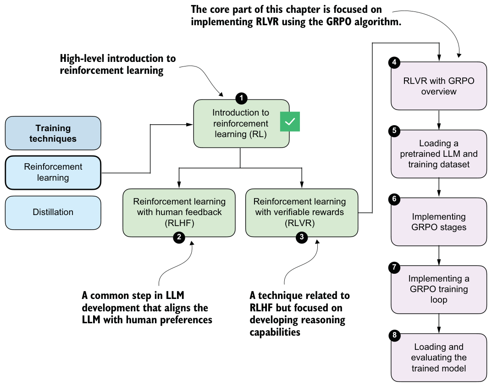
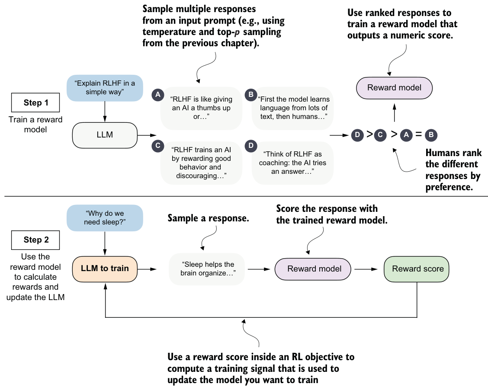
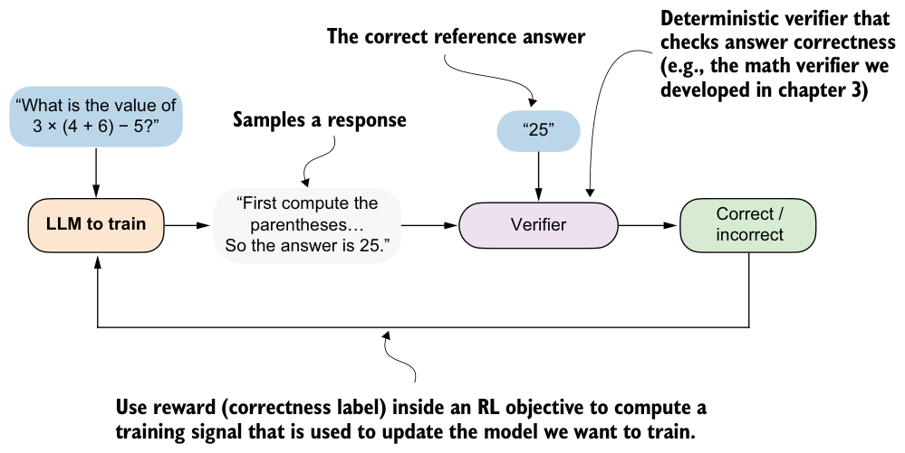

6.1.1The original RL pipeline with human feedback (RLHF)
In 2022, the InstructGPT paper “Training language models to follow instructions with human feedback” (https://arxiv.org/abs/2203.02155) introduced reinforcement learning with human feedback (RLHF), a training approach that uses human preference labels to modify model behavior. In fact, RLHF was a key ingredient in turning GPT-3 into the original model used in ChatGPT, which arguably made LLMs broadly popular in 2022.
At a high level, RLHF is the most popular method for implementing the preference-tuning stage. Before RLHF, LLMs were primarily trained through pretraining and, in some cases, supervised fine-tuning, both of which are based on next-token prediction objectives. RLHF moves beyond this token-level optimization and instead optimizes models on whole outputs (in this case, RLHF optimizes for how humans rank and evaluate LLM outputs).
To make this more concrete, consider the following prompt: “I am looking to buy a laptop for programming and everyday use. What should I consider?”

The model might generate two candidate responses:
- Response A: “You should consider the CPU, RAM, storage, GPU, screen resolution, battery life, keyboard quality, port selection, thermal design, and price.” Response B: “For programming and everyday use, focus on a fast CPU, at least 16 GB of RAM, and an SSD with at least 256 GB storage. A comfortable keyboard and good battery life also matter. A GPU may only matter if you plan to train small LLMs locally.”
Both responses mention relevant points, but a human data annotator might prefer response B because it is more concrete and specific to the use case stated in the prompt. In RLHF, such pairwise preferences are collected across many prompts and used to train the model to favor responses that humans consistently rank higher.
As shown in figure 6.5, RLHF has two main steps: (1) training a reward model (which is itself an LLM), and (2) using that reward model to score the target LLM outputs and fine-tune it.
>
>
=
The first step in RLHF is training a reward model, as illustrated in the top subpanel of figure 6.5. Here, we have the LLM generate multiple responses per prompt (for example, using the temperature scaling and top-p filtering approach explained in chapter 4) and ask human annotators to rank the answers from best to worst based on human preference.
These human preferences are converted into training targets for the reward model using a statistical preference model that maps pairwise comparisons to relative quality scores. The reward model, which is usually a separate model initialized from a pretrained LLM, is trained to output a single-number (scalar) reward score for each response that reflects its perceived quality. The idea is that the reward model can automatically score new model outputs, eliminating the need for human annotation at every training step.
The second step in RLHF trains the LLM on the reward scores the reward model assigns to its answers (for example, a bad answer may receive –2, and a good answer may receive +2).
We’re discussing RLHF here because it can be viewed as a precursor to reasoning-focused RL methods such as reinforcement learning with verifiable rewards (RLVR). While the source of the training signals for RLHF and RLVR differs, the underlying structure of the pipeline (generating responses, scoring them, and updating the model via RL) is closely related.
6.1.2From human feedback to verifiable rewards
RLHF can be fairly involved because it requires training an additional reward model, which is often a large LLM that is also expensive to train. Reinforcement learning with verifiable rewards (RLVR) simplifies this setup by replacing the LLM reward model with verifiable rewards, which are computed deterministically and without human annotation. For example, the math verifier introduced in chapter 3 is a verifiable reward generator for math problems. Given a math problem (and a correct solution), a math verifier automatically checks whether a generated solution’s final answer matches the ground truth and assigns a corresponding reward: 1 for a correct response and 0 for an incorrect one.
In RLVR, the two-step RLHF pipeline shown in figure 6.5 collapses into a single training loop that resembles step 2 in RLHF: the model generates responses, the verifier assigns rewards, and these rewards are used directly to update the model. This simplified RLVR training procedure is outlined in figure 6.6.

The popularity of RLVR can largely be traced to the success of DeepSeek-R1 in 2025 (https://arxiv.org/abs/2501.12948), which demonstrated that strong reasoning performance can be achieved without relying on human preference data or a learned reward model. DeepSeek-R1 trained reasoning behavior by using automatically verifiable rewards, including correctness checks for math problems (similar to our verifier in chapter 3) and code compilation and execution for code-related tasks.
Code execution is outside the scope of this book because it would require training the LLM in a secure execution environment. That would mean compiling and running model-generated code inside an isolated sandbox so it cannot access the host system, private files, or external services in unsafe ways, making the setup considerably more complex than solving math problems. Either way, the idea behind verifying math tasks (checking whether an answer is correct as a binary label) and code compilation (checking whether code compiles, also as a binary label) is similar, and the RLVR training algorithm would be identical.
To summarize, RLVR offers several practical advantages over RLHF. First, it removes the need to train and maintain a separate reward model, which is often comparable in size and cost to the base LLM.
Second, RLVR requires access to reliable verification signals, which restricts it to certain domains, such as math and code. But verifiable rewards are deterministic and reproducible, meaning they produce the same result every time for the same output, which avoids the noise and inconsistency that arise in human preference annotations.
Finally, RLVR scales naturally to large training sets because, given a reference solution, rewards can be computed automatically for any number of model-generated answers without additional human labeling effort.